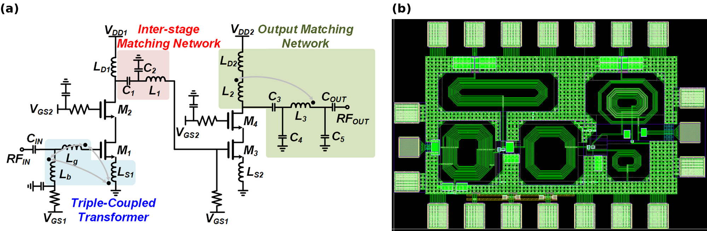

Abstract
- 1Department of Quantum Information Engineering, Sungkyunkwan University, Suwon, Gyeonggi, Republic of Korea
Scaling superconducting-qubit quantum computers to thousands of qubits and beyond requires the high-frequency electronics that control and read out each qubit to be densely integrated close to the cryogenic environment. Today, controlling and measuring qubits relies on a large set of room-temperature instruments, such as microwave signal generators, arbitrary waveform generators, and digitizers, together with bulky cryogenic components such as ferrite circulators and isolators, attenuators, and filters. These are connected by numerous coaxial cables that run from room temperature down to the millikelvin stage. As the number of qubits grows, this architecture fundamentally limits scalability in terms of heat load, wiring complexity, system size, and cost. Our group, the Integrated Circuits and Systems Laboratory (ICSL), conducts research on silicon CMOS integrated circuits for Cryo-CMOS SoCs for scalable quantum computing. To minimize the equipment, cabling, and footprint required for qubit measurement, we design circuits that operate inside the cryogenic refrigerator and replace these room-temperature instruments and bulky components with compact ICs. Our work includes Cryo-CMOS readout and control ICs, covering the key building blocks of the receiver (Rx) chain, such as low-noise amplifiers (LNAs), mixers, and baseband amplifiers [1]. We also develop CMOS circulators and isolators that replace ferrite-based components, circulator-integrated readout receivers, cryogenic quantum RF metrology SoCs, and cryogenic interconnections. In this poster, I will introduce our research on CMOS SoCs for scalable quantum computing, including Cryo-CMOS readout and control ICs and a fully integrated CMOS readout receiver IC. In particular, I will focus on the CMOS LNA, the first stage of the CMOS readout receiver. The proposed LNA, implemented in a 65-nm CMOS process, uses a three-coil coupled transformer to achieve wideband performance covering the qubit readout band.

- Y. Peng, A. Ruffino, T.-Y. Yang, J. Michniewicz, M. F. Gonzalez-Zalba, and E. Charbon, IEEE J. Solid-State Circuits, 57, 2374 (2022).